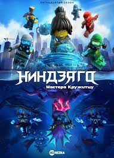

⚔ninjago

Описание мультфилма
Фильм начинается с того, как мальчик входит в антикварный магазин мистера Лью. Хозяин магазина рассказывает историю про вымышленную страну Ниндзяго. Действие разворачивается в центральном городе острова Ниндзяго, на которого часто нападает лорд Гармадон, отец Ллойда Гармадона (Зелёного ниндзя) и муж Коко (матери Ллойда). Город презирает Ллойда за то, что он является сыном Гармадона, на что он пытается не обращать внимания. Горожане не знают, что Ллойд является частью секретной команды ниндзя, состоящей из Нии, Зейна, Джея, Коула, Кая и их тренера по имени Мастер Ву, которые всегда останавливают Гармадона от захвата города. Ллойду приходится жить двойной жизнью: в облике обычного паренька его ненавидит каждый встречный (одноклассники даже записали кавер на известную песню, с оскорбляющим Ллойда текстом), а в облике Зелёного ниндзя — он любимец народа и его герой. В день рождения Ллойда, Гармадон снова атакует город. Проиграв, он отступает на свой остров-вулкан и увольняет многих своих генералов за некомпетентность в разработке нового плана захвата Ниндзяго. Вскоре, Гармадон снова нападает на город.
Тем временем Ллойд и его друзья встречают Учителя Ву, вернувшегося из своей долгой поездки. Мастер Ву говорит им, что они не настоящие ниндзя, если используют только роботов и машины. Он обсуждает с Ллойдом истинное предназначение Зелёного Ниндзя, но разговор лишь путает юношу. Ву говорит, что Ллойд не должен сердиться на Гармадона, а использовать свой ум для борьбы с ним. В беседе Ву упоминает Супер Оружие, и Ллойду приходит идея окончательно победить темного лорда раз и навсегда с помощью этого оружия, несмотря на то, что использовать его запрещено.
На следующий день Гармадон атакует город. Он побеждает Ллойда и уничтожает его робота. Когда Гармадон объявляет городу, что он его полностью покорил, Ллойд возвращается с Супер Оружием. Он стреляет в противника, но оказывается, что это лишь лазерная указка, которая привлекает настоящую кошку по кличке Мяузилла. Последняя начинает разрушать город, гоняясь за красной точкой лазера. Гармадон отбирает указку и управляет кошкой при помощи лазера, заставляя её уничтожить других роботов, принадлежащих ниндзя. Ллойд теряет веру в себя, раскрывает Гармадону свою истинную личность и уходит, произнося «Мне жаль что ты мой отец». Гармадон не находит, что ответить.
Ллойд встречается со своими друзьями и Учителем Ву, которые расстроены тем, что Ллойд использовал оружие. Ву говорит им, что они должны использовать Супер-Пупер Оружие, чтобы остановить Мяузиллу. Они смогут достать Супер-Пупер Оружие, если пересекут Лес Опасностей, Каньон Смерти и Храм Хрупких Фонтов. Гармадон подслушивает, как Ву говорит об оружии и следует за ним. Он встречается с Ву и борется с ним, но оказывается в клетке. Однако Ву теряет равновесие и падает с моста в реку, успевая сказать Ллойду, что он должен использовать внутреннюю силу, для того, чтобы добыть Супер-Пупер Оружие.
Ниндзя продолжают путь с Гармадоном, что разочаровало Ллойда. Внезапно, их атакуют бывшие генералы Гармадона, жаждущие мести. Ниндзя сражаются, но проигрывают; они отступают, а Ллойд и Гармадон пойманы генералами. Они собираются сбросить Ллойда и Гармадона в вулкан. Тем не менее, остальные ниндзя спасают их. Ниндзя и Гармадон вместе строят импровизированный вертолет и спасаются.
В итоге они попали в Храм Хрупких Фонтов, который оказывается домом Гармадона и его жены, Леди Стального Дракона, матери Ллойда. Гармадон хочет, чтобы Ллойд остался с ним и матерью, и они покорят Ниндзяго, но Ллойд отказывается, потому что не может предать друзей. Ниндзя находят Супер-Пупер оружие, состоящее из набора безделушек. Гармадон, который все еще хочет захватить город, крадёт их. Из ярости, что Ллойд отказывается к нему присоединиться, Гармадон запирает всех в храме, когда он начинает рушиться. Ллойд понимает, что он и команда должны использовать свои силы стихий, которые и являются их внутренней силой. Они успешно это делают и убегают из разрушающегося храма. Ву подбирает их на свой Летучий Корабль, и они направляются в Ниндзяго.
Гармадон прибывает в город и пытается одолеть кошку с помощью Супер-Пупер оружия, но животное съедает Гармадона. Команда ниндзя попадает в город и сражаются с армией Гармадона. Когда Ллойд приближается к кошке, он открывает всем, что он Зеленый Ниндзя, и понимает, что зеленый — означает жизнь, которая объединяет все. Он успокаивает кота и говорит Гармадону, что прощает его. Гармадон плачет огненными слезами, из-за чего Мяузилла выплёвывает его. После, Гармадон возвращается к родной семье — Ллойду и Коко, Мяузилла становится талисманом Ниндзяго, а Ллойда называют героем.
По завершении истории, господин Лью говорит мальчику, что он будет его обучать приёмам ниндзя.
более подробная информация на этом сайте
Персонажи
- Кай
- Джей
- Зейн
- Коул
- Ллойд
- Ния
И еще много персонажей